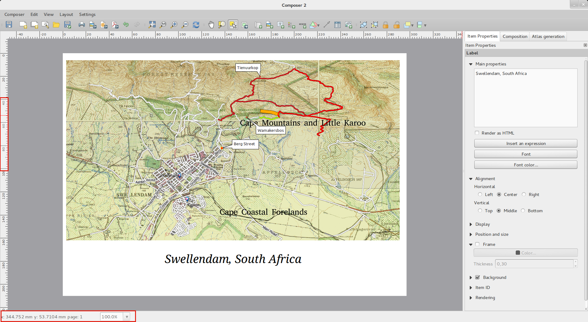

QGIS 2.2 pakeitimai¶
Kitos QGIS laidos 2.2.0 pakeitimai. Pagrindinis šios laidos dėmesys buvo skiriamas apdailai ir greitaveikai - pridėjome daug naujų savybių, pataisymų ir praplėtimų, kurie naudotojo sąsają daro nuoseklesne ir profesionalės išvaizdos (ir tikėkimės paprastesne naudoti). Kūrėjas (kuris naudojamas kuriant spausdinimui paruoštus žemėlapius) buvo stipriai patobulintas, kad būtų dar tinkamesnė platforma kuriant puikius kartografinius rezultatus.
Pridėjus naujų savybių atsiranda tikimybė, kad buvo pridėta ir naujų klaidų - jei randate kokių nors šios laidos problemų, prašome užregistruoti problemą QGIS klaidų registravimo sistemoje.
Norime padėkoti programuotojams, dokumentuotojams, testuotojams ir dar būriui kitų žmonių, kurie savo noru aukojo savo laiką ir pastangas (arba finansavo tuo užsiimančius žmones).
From the QGIS community we hope you enjoy this release! If you wish to donate time, money or otherwise get involved in making QGIS more awesome, please wander along to qgis.org and lend a hand!
Na ir pagaliau norėtume padėkoti savo rėmėjams už neįkainojamą finansinę paramą šiam projektui:
- AUKSINIS rėmėjas: Asia Air Survey, Japonija
- SIDABRINIS rėmėjas: G.A.I.A. mbH, Vokietija
- SIDABRINIS rėmėjas: State of Vorarlberg, Austrija
- BRONZINIS rėmėjas: www.molitec.it, Italija
- BRONZINIS rėmėjas: www.argusoft.de, Vokietija
A current list of donors who have made financial contributions large and small to the project can be seen on our donors list.
If you would like to make a donation or sponsor our project, please visit our sponsorship page for details. QGIS is Free software and you are under no obligation to do so. Sponsoring QGIS helps us to fund our six monthly developer meetings, maintain project infrastructure and fund bug fixing efforts.
- Programos ir projekto parinktys
- Duomenų tiekėjai
- Skaitmeninimas
- Bendra
- Žemėlapio kūrėjas
- Savybė: Zebro žemėlapio rėmo patobulinimai
- Savybė: elementų pasukimo palaikymas
- Savybė: į kūrėją pridėtas mastelis ir liniuotės patobulinimai
- Savybė: pasaulio failo kūrimas
- Savybė: darbas su keliais elementais
- Savybė: atlaso patobulinimai
- Savybė: patobulintas elementų žymėjimas
- Savybė: geresnė navigacija kūriniuose
- Savybė: patobulinti puslapių ir formų stiliai
- QGIS Serveris
- Simbologija
- Savybė: gradiento užpildymo palaikymas
- Savybė: etikečių palaikymas rastrams su paletėmis
- Savybė: spalvų rampas galima invertuoti
- Savybė: kopijavimas ir įkėlimas braižyme pagal taisykles
- Savybė: automatinis geoobjektų supaprastinimas
- Savybė: žymeklių sluoksniuose galima nurodyti pririšimo taškus
- Savybė: nuo išraiškų priklausantys teminiai žemėlapiai
- Savybė: išraiškų palaikymas dydžiui ir atributams simbolių diagramose
- Savybė: „else“ taisyklė taisyklėmis paremtame braižyme
- Savybė: vidinio paišymo palaikymas poligonams
- Naudotojo sąsaja
Programos ir projekto parinktys¶
Savybė: galimybė matuoti jūrmylėmis¶
Visiems jūrininkams, jūs dabar galite matuoti atstumus jūrmylėmis. Norėdami tai įjungti, naudokite nustatymų skydelį „Nustatymai->Parinktys->Žemėlapio įrankiai“.

Duomenų tiekėjai¶
Savybė: „vieno su daug“ ryšių palaikymas¶
Nuo šios laidos galite apibrėžti 1:n ryšius. Ryšiai apibrėžiami projekto savybių dialoge. Kai sluoksnis turi ryšių, formos rodyme (pvz. identifikuojant geoobjektą ir atidarant jo formą) atsiranda naujas naudotojo sąsajos elementas, kuris rodys visas susijusias esybes. Tai leidžia labai patogiai rodyti pavyzdžiui vamzdyno ar kelio segmento apžiūros istoriją. Daugiau apie ryšių palaikymą rasite čia.


Savybė: įkelti kaip naują vektorinį sluoksnį¶
Dažnas GIS veiksmas yra parinkti kelis objektus ir iš jų sukurti naują sluoksnį. QGIS jau turėjo funkciją „įrašyti pažymėjimą kaip“, leidžiančią pažymėjimą įrašyti kaip sluoksnį, o naujas funkcionalumas leidžia sukurti naują failą ar atminties sluoksnį iš iškarpinėje esančių objektų. Tiesiog pažymėkite kelis geoobjektus, nukopijuokite juos į iškarpinę ir tada „Keisti-Įkelti geoobjektus kaip“ bei meniu pasirinkite „Naujas vektorinis sluoksnis“ arba „Naujas atminties sluoksnis“. Geriausia šio naujo funkcionalumo dalis yra ta, kad iškarpinėje galite turėti kelis gerai žinomo teksto (WKT) geoobjektus iš kitos programos, ir juos įkelti į QGIS kaip naują sluoksnį.

Savybė: WMS legendos vaizdas turinyje ir kūrėjyje¶
Iki QGIS 2.2, WMS duomenų tiekėjas negalėjo rodyti legendos sluoksnių sąraše. Taipogi legenda negalėjo būti rodoma kūrėjyje. QGIS 2.2 išsprendžia abi šias problemas.
Paspaudus ant sluoksnio legendos, bus atvertas rėmas su legenda pilna rezoliucija. Legenda rodys kontekstinę informaciją priklausomai nuo jūsų dabartinio mastelio. WMS legenda bus rodoma tik tada, kai WMS stotis turi GetLegendGraphic galimybę. Legendos rezoliuciją galima pakeisti Drobės ir Sutartinių ženklų parinktyse.

Skaitmeninimas¶
Savybė: užpildyto žiedo skaitmeninimo įrankis¶
Šis naujas įrankis naudojamas skylių iškirpimui poligonuose ir automatiniam jų užpildymui naujais geoobjektais. Jei baigdami geoobjektą laikysite Ctrl, atributai bus paimti iš tėvinio geoobjekto.

Bendra¶

Savybė: įkelti WKT iš iškarpinės¶
QGIS dabar gali įkelti ir sukurti naują geoobjektą pagal WKT, kuris yra iškarpinėje. Tiesiog nukopijuokite WKT ir įkelkite į keičiamą sluoksnį. Taipogi galite sukurti naują sluoksnį, parinkę Keisti -> Įkelti kaip -> Naujas atminties sluoksnis
Žemėlapio kūrėjas¶
Savybė: Zebro žemėlapio rėmo patobulinimai¶
Žemėlapio kūrėjas dabar leidžia nurodyti „Zebro“ žemėlapio rėmo elemento spalvas.

Savybė: elementų pasukimo palaikymas¶
Bet kokio tipo kūrėjo elementus dabar galima pasukti, įskaitant ir mastelio juostas, lenteles ir sutartinius ženklus. Pavyzdžiui jūs galite pasukti etiketę, kad ji geriau tilptų į jūsų puslapį (kaip parodyta iliustracijoje). Taipogi pagerintas pasuktų elementų dydžio keitimas.

Savybė: į kūrėją pridėtas mastelis ir liniuotės patobulinimai¶
Liniuočių išvaizda buvo pagerinta pakeitus mastelio logiką ir pridėjus smulkesnius liniuotės matmenis. Vertikalios liniuotės dabar naudoja pasuktą tekstą. Taipogi atsirado naujas kūrėjo veiksmas rodyti/slėpti liniuotes. Dabar galite greitai pakeisti mastelį į 100% naudodami „Didinti iki 100%“ įrankinės įrankį. Kūrėjo langas dabar leidžia greitai keisti puslapio mastelį naudojant mastelio iškrentantį sąrašą būsenos juostoje. Pridėtas naujas indikatorius, rodantis tikslią jūsų žymeklio poziciją. Mygtukai „Uždaryti“ ir „Pagalba“ pašalinti iš kūrėjo lango apačios, kad darbui su jūsų kūriniu galėtumėte naudoti daugiau ekrano vietos.

Savybė: pasaulio failo kūrimas¶
Kūrėjas dabar moka sukurti geografiškai pririštus žemėlapius! Tiesiog įsitikinkite, kad Kūrimo kortelėje parinktas teisingas žemėlapio elementas, tada eksportuokite žemėlapį kaip PNG failą. Bus sukurtas atitinkamas pasaulio failas, leidžiantis įkelti jūsų eksportuotą žemėlapį į QGIS kaip rastro sluoksnį.

Savybė: darbas su keliais elementais¶
Dabar galima perkelti ir keisti dydį keliems elementams iš karto. Keisdami dydį galite laikyti shift, kad išlaikytumėte elemento proporcijas arba laikyti ctrl, kad keistumėte dydį nuo elemento centro. Klavišų kombinacijos taip pat taikomos elementų perkėlimui, taigi shift laikymas perkeliant elementą apriboją perkėlimą tik horizontaliai arba vertikaliai, o laikant ctrl laikinai išjungiamas pritraukimas. Taipogi galite laikyti shift spaudžiant kursoriaus mygtuką, kad perkeltumėte visus pažymėtus elementus didesniu atstumu.
Savybė: atlaso patobulinimai¶
Žemėlapio atlase galite peržiūrėti konkrečius puslapius, kuriuos sukurs kūrėjas. Atlaso peržiūros režime galite išvesti dabartinį puslapį nekuriant viso atlaso. Peržiūrėdami galite keisti žemėlapio apimtis arba mastelį kiekvienam geoobjektui. Atlaso žemėlapio nustatymai perkelti iš atlaso skilties į žemėlapio savybių skilti, taigi dabar atlaso kūrimas valdo daugiau nei vieną žemėlapį. Yra nauja parinktis automatiškai centruojanti peržiūros žemėlapį, tai labai patogu kuriant žemėlapius pagal atlasą. Dabar yra daugiau susijusios informacijos, taigi galite keisti simbologiją pagal geoobjektus nepriklausomai nuo to, ar geoobjektas yra atlaso dalis ar ne. Daugiau informacijos rasite šiame straipsnyje.

Savybė: patobulintas elementų žymėjimas¶
Dabar galite pažymėti daugiau nei vieną elementą paspaudę ir tempdami rėmą jų pažymėjimui, taipogi yra klavišų kombinacijos pridėjimui į pažymėjimą (tempiant laikyti shift), išėmimui iš pažymėjimo (tempiant laikyti ctrl) ir persijungimui į režimą žymėjimo „viduje“ (tempiant laikykite alt). Pažymėto elemento paspaudimas laikant shift išims jį iš pažymėjimo. Yra klavišų kombinacijos ir meniu elementai visų elementų pažymėjimui, žymėjimo išvalymui ir žymėjimo invertavimui. Dabar jau galima pažymėti elementus, kurie yra paslėpti po kitais elementais, spaudžiant elementą su cntrl arba parinkus „Pažymėti kitą elementą esantį apačioje/viršuje“, kurį rasite naujame kūrėjo meniu „Keisti“.
Savybė: patobulinti puslapių ir formų stiliai¶
Dabar galite valdyti kūrinio foną naudodami platų spektrą QGIS simbologijos parinkčių. Galite eksportuoti kūrinius su permatomu (ar pusiau permatomu) fonu. Formų elementų (stačiakampiai, trikampiai ir elipsės) stilius turi tokias pačias parinktis kaip ir poligonų žemėlapių sluoksnių stilius. Netgi galite keisti foną ar formas naudodami nuo duomenų priklausančius nustatymus pagal dabartinį atlaso geoobjektą! Yra ir nauja parinktis stačiakampių formų kampų apvalinimui.
QGIS Serveris¶
Savybė: QGIS serveris dabar palaiko WCS¶
QGIS-Serveris jau palaiko standartus: Web Map Service (WMS 1.3.0 ir 1.1.1 versijos), Web Feature Service (WFS 1.0.0 versija) ir Web Feature Service with Transaction (WFS-T). Ši nauja QGIS laida taipogi palaiko rastro sluoksnių teikimą naudojant Web Coverage Service (WCS 1.0.0 versijos)) standartą.

Simbologija¶
Savybė: gradiento užpildymo palaikymas¶
Nauja gradiento užpildymo savybė leidžia kurti dar geresnę kartografiją. Ši savybė turi kelias parinktis, leidžiančias lanksčiau taikyti gradientą jūsų geoobjektams. Parinktys yra:
- Dviejų spalvų arba rampos užpildymas
- Gradientai pagal drobę ar objektą
- Gradientai, prasidedantys geoobjektų viduryje
- Kūginis, linijinis ir radialinis gradientų tipai
- Visų gradiento savybių priklausymas nuo duomenų (naudojant išraišką ar lentelės stulpelį)
Daugiau informacijos apie gradientų užpildymo naudojimą rasite čia.

Savybė: etikečių palaikymas rastrams su paletėmis¶
Rastrams, kurie naudoja fiksuotą spalvų paletę (paprastai tokie būna žemėnaudos žemėlapiai), dabar galima priskirti kategorijų etiketes, kurios bus rodomas žemėlapio legendoje ir kūrėjo legendoje.

Savybė: spalvų rampas galima invertuoti¶
Simbologijos dialoguose pridėta nauja parinktis, leidžianti invertuoti spalvų rampas po jų sukūrimo.

Savybė: kopijavimas ir įkėlimas braižyme pagal taisykles¶
Braižyme pagal taisykles dešinio pelės mygtuko paspaudimu ant taisyklės galima kopijuoti ir vėliau įkelti taisyklę kaip naują.

Savybė: automatinis geoobjektų supaprastinimas¶
QGIS 2.2 turi naują savybę - automatinį geoobjektų supaprastinimą. Tai gali padėti braižymo greitaveikai, kai braižoma labai daug sudėtingų geoobjektų smulkiu masteliu. Šią funkciją galima įjungti ir išjungti sluoksnio nustatymuose. Taip pat yra naujas globalus nustatymas, leidžiantis automatinį supaprastinimą naujai pridėtiems sluoksniams. Pastaba Geoobjektų supaprastinimo pasekoje jūsų išvestyje kartais gali atsirasti artefaktų. Tai gali būti atplaišos tarp poligonų ir netikslus braižymas, naudojant simbolinius sluoksnius su poslinkiu.

Savybė: žymeklių sluoksniuose galima nurodyti pririšimo taškus¶
Apibrėžiant simbologiją naudojant žymeklių sluoksnius (pvz. taškų sluoksnį simbolizuojant SVN žymekliais), jūs galite nurodyti kuri piešinio dalis laikoma „pririšimo tašku“. Pavyzdžiui jūs galite nurodyti, kad apatinis-kairysis piešinio kampas turi sutapti su geoobjekto pozicija. Taipogi galite naudoti „su duomenimis susijusias savybes“, kad ši savybė būtų nustatoma braižymo metu priklausomai nuo sluoksnio duomenų lentelės atributo (arba konkrečios reikšmės).

Savybė: nuo išraiškų priklausantys teminiai žemėlapiai¶
Naudojant išraiškos rezultatą dabar galima sukurti kategorizuotus ir graduotus teminius žemėlapius. Vektorinių sluoksnių savybių dialoge buvo pridėtas išraiškų kūrėjas. Taigi daugiau jums nebereikia kurti klasifikacijos atributo kaip naujo lauko atributų lentelėje, jei norite, kad klasifikacijos atributas būtų sukurtas pagal kelis laukus arba kokią nors formulę.

Savybė: išraiškų palaikymas dydžiui ir atributams simbolių diagramose¶
Dabar kurdami QGIS diagramas galite naudoti išraiškas nustatydami dydį ir atributus. Daugiau informacijos rasite prie pokyčio aprašymo: Pull 1039

Savybė: „else“ taisyklė taisyklėmis paremtame braižyme¶
Taisyklėmis paremtame braižyme dabar galima naudoti taisyklę ELSE - „priešingu atveju“, kuri bus vykdoma, jei netiko nei viena kita to lygio taisyklė. Else taisyklę galima jungti į grupę kaip ir bet kokią kitą taisyklę.
Pavyzdys galėtų būti:
type = 'water' (pilkas stilius)ELSE (raudonas stilius)
Savybė: vidinio paišymo palaikymas poligonams¶
Palaikomas plačios juostos paišymas tik poligono viduje (juosta neišsikiša į greta esantį poligoną).
Daugiau informacijos apie šią savybę rasite antroje angliškoje šio straipsnio dalyje.

Naudotojo sąsaja¶
Savybė: pagerinti savybių dialogai¶
Visi savybių dialogai buvo atnaujinti: jie gražiau atrodo, šoninę skiltį nuspalvinus kontrastinga spalva. Tai kosmetika, bet turėtų padėti jums susigaudyti, kokiame dialogo kontekste esate.

Savybė: išraiškų dialogo patobulinimai¶
Mes patobulinome išraiškų dialogą - labiau įgudę naudotojai gali paslėpti veiksmų mygtukus. Taipogi atsirado dalikliai tarp funkcijų sąrašo ir funkcijų pagalbos zonų bei tarp išraiškos ir funkcijos sąrašo zonų. Daugiau informacijos rasite pradiniame pokyčio aprašyme.

Savybė: naujos klavišų kombinacijos¶
Mes atnaujinome QGIS klavišų kombinacijas, kad būtų galima efektyviau vykdyti pasikartojančias užduotis.
ctrl-d- Išimti turinyje pažymėtus sluoksnius>- Parinkti kitą viršūnę naudojant taškų įrankį<- Parinkti ankstesnę viršūnę naudojant taškų įrankįDeletearBackspace- naikinti pažymėtus geoobjektus (šiuos veiksmus galite atšaukti) arba tašką, jei naudojate taškų įrankį.F5atnaujina drobę (vietoje ctrl-r)
Taipogi žiūrėkite Problema 9094 ir Pokytis 1010, jei reikia daugiau informacijos.